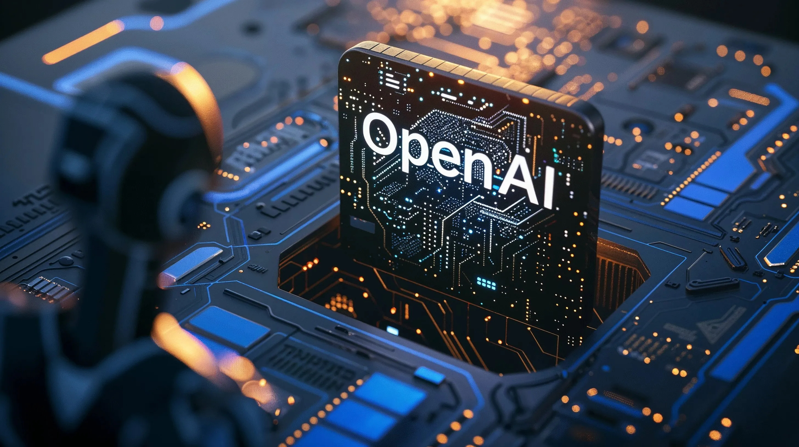

By Joseph Zou · March 28, 2025

The rise of artificial intelligence has ushered in transformative innovation, but it has also surfaced complex ethical questions. In 2023, OpenAI, the company behind ChatGPT and DALL-E, faced a lawsuit for allegedly using massive amounts of personal and copyrighted data without consent to train its AI models. Plaintiffs claim the company scraped the internet for sensitive material, including chat logs, emails, medical records, and creative content, doing so without notifying individuals or seeking permission (Cerullo & Ivanova, 2023). The central concern is whether OpenAI’s data practices respect individual rights when they serve as the foundation of widely used commercial AI tools.
Originally founded as a nonprofit, OpenAI later restructured into a for-profit entity and adopted sweeping data-gathering practices. Plaintiffs argue it harvested data from Reddit, YouTube, Facebook, and even private user interactions like purchases and location data (Yang, 2023). CNN reported that OpenAI sought out “essentially every piece of data exchanged on the internet it could take, without notice to the owners or users” (Cerullo & Ivanova, 2023). Plaintiffs allege the company captured everything from payment information to keystroke data, forming digital profiles without awareness.
At the heart of this case is an ethical tradeoff. OpenAI’s tools provide real benefits in education, healthcare, and communication. By training models on large-scale data, OpenAI created systems that help students, assist doctors, and expand access to information. Supporters argue that this serves the common good. Yet these benefits must be weighed against the rights of individuals whose personal data was used without their knowledge or consent.
“OpenAI bears ethical responsibility for training its AI models on personal and copyrighted data without consent.”
By using personal and copyrighted data without consent, OpenAI violated the autonomy of content creators by denying them control and transparency, while profiting without offering compensation or accountability. Autonomy requires that individuals have informed, voluntary control over how their data is collected and used. OpenAI users were not given meaningful opportunities to consent, with no clear notice, no opt-out, and no transparency. Datasets like WebText2 scraped data from major platforms without the knowledge of users (Yang, 2023). This absence of consent stripped people of control over their digital identities.
The consequences extend beyond scraping. Content that individuals originally shared on blogs, forums, or social media has been embedded in OpenAI’s commercial products. People who never agreed to have their data used for commercial purposes may now see their words or ideas reflected in AI-generated outputs without attribution or transparency. This denies individuals the ability to decide how their digital presence is used and undermines their autonomy.
OpenAI’s actions also raise fairness concerns. Fairness holds that individuals who contribute value to a system should not be used solely for the benefit of others without recognition or benefit. OpenAI collected data from authors, artists, journalists, and everyday contributors to train its AI. Their work shaped ChatGPT’s fluency and DALL-E’s creativity, yet it was used without acknowledgment, permission, or compensation. The lawsuit argues OpenAI’s products “only reached the level of sophistication they have today due to training on stolen, misappropriated data” (Yang, 2023). Meanwhile, OpenAI earned billions while those whose data enabled that success were left uncompensated (Cerullo & Ivanova, 2023).
Some argue that OpenAI only used publicly available data, but this does not excuse the ethical failures involved. Even public information can include personal or copyrighted material. Most users do not expect their content to be harvested to train commercial AI systems. Transparency and informed consent are ethical requirements regardless of visibility. Yang (2023) emphasizes the scope of the data scraped, including emails, IP addresses, and medical information, which intensify the ethical stakes.
This case highlights a conflict between social benefits and individual rights. On one hand, OpenAI’s tools improve access to education and healthcare. On the other, this innovation was achieved by monetizing personal data without informing the people behind it. The methods compromised the rights of individuals to control their digital identities and to be treated fairly in systems they helped create.
OpenAI’s methods violated autonomy by denying users control over their data and fairness by excluding contributors from recognition or benefit. While AI progress has value, it must not come at the expense of individual rights. Respecting consent and transparency is essential for ethical innovation.